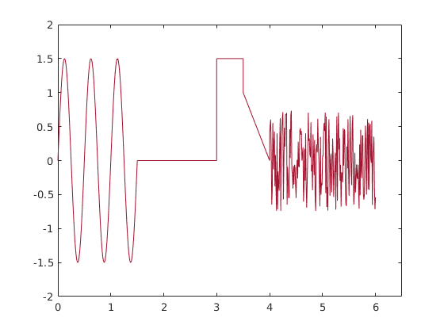

Rostislavs Arhipovs
Contents
Laboratorijas darbs3.
1) uzzimet grafiku no bilde 2) funkcija ar datu filtraciju
function y = uzdlab3(t)
if nargin == 0 t = 0:0.01:6; % kopigais laiks end % t = 0:0.01:6.5; % kopigais laiks t_sinf=(t>=0&t<1.5); t_sin = t(t_sinf); t_constf=(t>=1.5&t<3); t_const=t(t_constf); t_consttf = (t>=3&t<3.5); t_constt = t(t_consttf); t_sawf = (t>=3.5&t<4); t_saw = t(t_sawf); t_noisef=(t>=4&t<6); t_noise=t(t_noisef); % t_saw = 0:0.01:0.5; % t_zero = 0.5:0.01:1.5; % t_const = 3.5:0.01:5; % t_noise = 5:0.01:6.5
sinusoida
sinusoida
A0= 0; A=1.5; T = (3.5-1.5)/2 f = 1/T; delay=1; t_sin = 0:0.01:1.5; y_sin=A0+A*sin(4*pi*f*(t_sin-delay)); plot(t_sin,y_sin) hold on axis([0 6.5 -2 2]) %% komanda uzreiz jaieliek visus robezus visejam grafika!!
T =
1
Pirma constanta
t_const = 1.5:0.01:3; y_const = zeros(size(t_const)); plot(t_const,y_const)
Otra constanta
t_constt = 3.0:0.01:3.5; y_constt = zeros(size(t_constt))+1.5; plot (t_constt,y_constt)
mainiga linija
t_saw = 3.5:0.01:4;
k = (1-0)/(3.5-4)
delay = 4;
y_saw = k*(t_saw-delay);
hold on
plot (t_saw,y_saw);
k =
-2
Troksna signals
t_noise = 4:0.01:6; y_noise = 1.5*rand(size(t_noise))-0.75; plot(t_noise,y_noise)
apvienosu visu viena vektora
t1 = [0 1 2 3]; t2 = [4 5]; t= [t1 t2] paradisies [0 1 2 3 4 5]
t = [t_sin,t_const,t_constt,t_saw,t_noise]; y = [y_sin,y_const,y_constt,y_saw,y_noise]; plot(t,y); if nargout == 0 plot(t,y); y = []; % lai nerada daudz ciparus end
ans =
[]
 Secinajums
%Iemcijus zimet grafiku no bilde, ari taisit funkcijas. %ar jauniem komandiem.